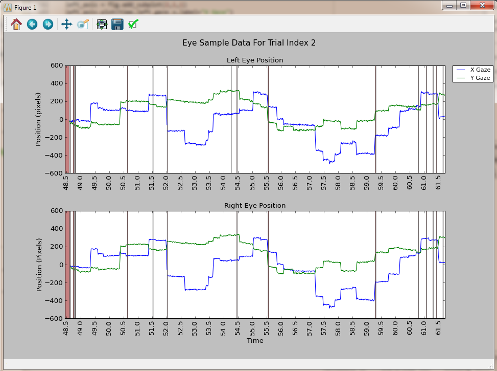
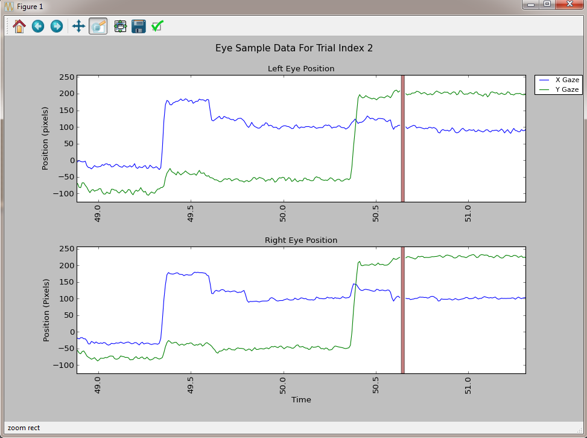
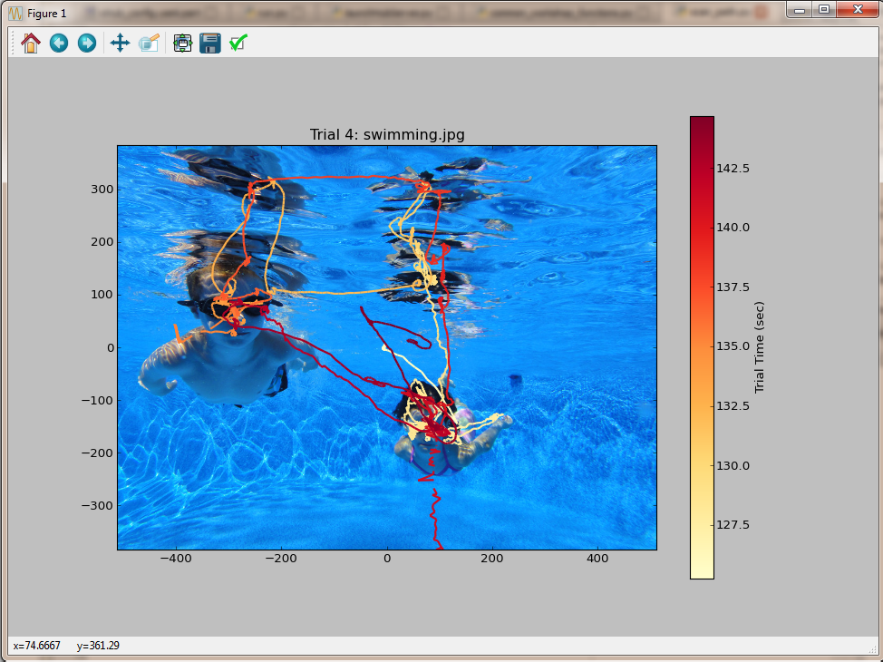
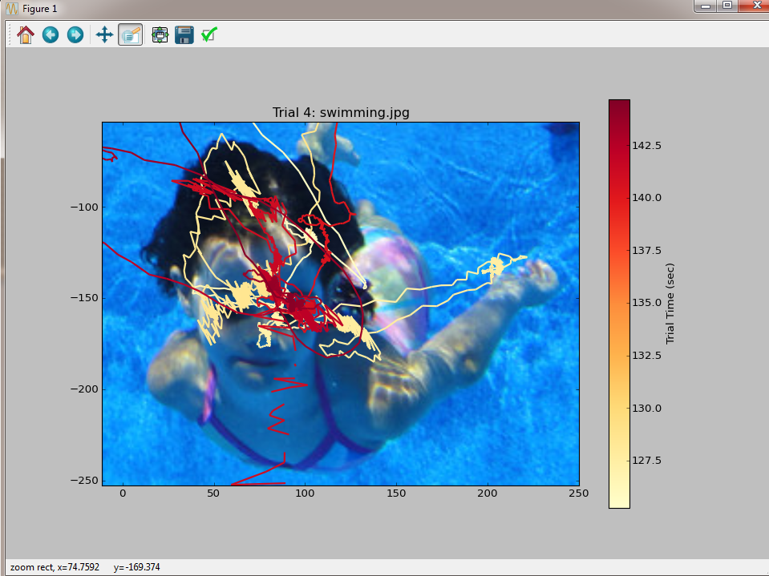
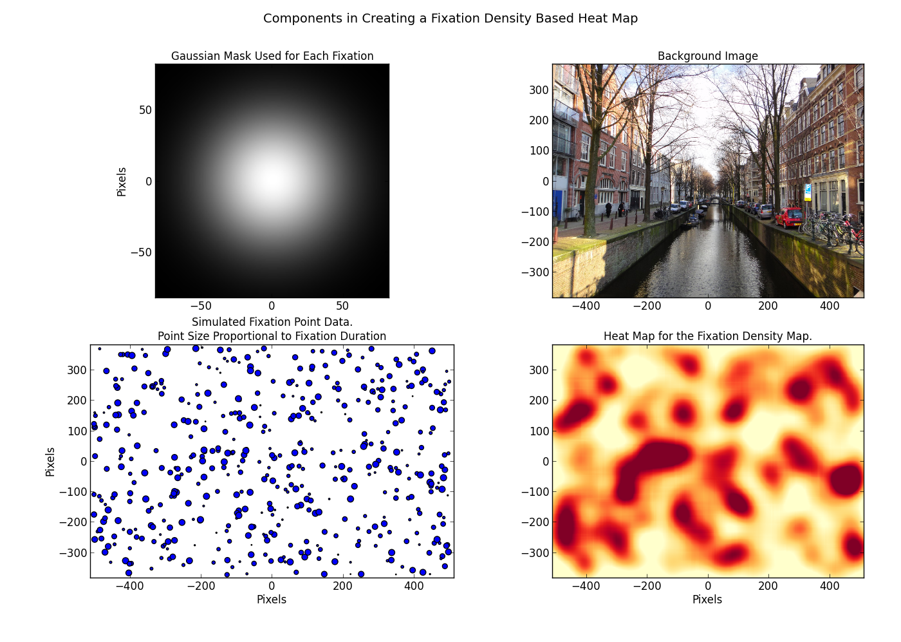
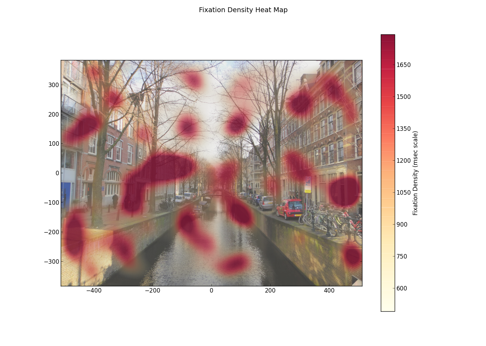

|
|
|
|
There are seemingly endless ways to visualize and plot data collected from eye tracking devices. Which types of visualization are most relevant depends directly on the application / experimental paradigm the eye tracker is being used in, and the type of data analysis that will be performed on the resulting data collected.
We will review example implementations for the following data visualization / plotting methods:
All the example code for data visualization is available in the python_source/data_visualization folder of the workshop materials.
The basic steps involved in plotting eye position traces collected from an eye tracker via the ioHub Common Eye Tracker Interface are:
The following code example outlines these steps. It is assumed that you are running matplotlib using the windowed graph viewer.
# This Python Source File Available in python_source/data_visualization/sample_trace_plot.py
from psychopy.iohub.datastore.util import ExperimentDataAccessUtility
from psychopy.iohub import EventConstants
import matplotlib.pyplot as plt
import matplotlib.transforms as mtransforms
from matplotlib.font_manager import FontProperties
from common_workshop_functions import processSampleEventGaps
import numpy as np
# Load an ioDataStore file containing 120 Hz sample data from a
# remote eye tracker that was recording both eyes. In the plotting example
dataAccessUtil=ExperimentDataAccessUtility('../hdf5_files','remote_data.hdf5', experimentCode=None,sessionCodes=[])
##### STEP A. #####
# Retrieve a subset of the BINOCULAR_EYE_SAMPLE event attributes, for events that occurred
# between each time period defined by the TRIAL_START and TRIAL_END trial variables of each entry
# in the trial_conditions data table.
#
event_type=EventConstants.BINOCULAR_EYE_SAMPLE
retrieve_attributes=('time','left_gaze_x','left_gaze_y','left_pupil_measure1',
'right_gaze_x','right_gaze_y','right_pupil_measure1','status')
trial_event_data=dataAccessUtil.getEventAttributeValues(event_type,
retrieve_attributes,
conditionVariablesFilter=None,
startConditions={'time':('>=','@TRIAL_START@')},
endConditions={'time':('<=','@TRIAL_END@')},
)
# No need to keep the hdf5 file open anymore...
#
dataAccessUtil.close()
# Process and plot the sample data for each trial in the data file.
#
for trial_index,trial_samples in enumerate(trial_event_data):
##### STEP B. #####
# Find all samples that have missing eye position data and filter the eye position
# and pupil size streams so that the eye track plot is more useful. In this case that
# means setting position fields to NaN and pupil size to 0.
#
# left eye manufacturer specific missing data indicator
left_eye_invalid_data_masks=trial_samples.status//10>=2
# Right eye manufacturer specific missing data indicator
right_eye_invalid_data_masks=trial_samples.status%10>=2
# Get the needed left eye sample arrays
#
left_gaze_x=trial_samples.left_gaze_x
left_gaze_y=trial_samples.left_gaze_y
left_pupil_size=trial_samples.left_pupil_measure1
# Process the left eye fields using the processSampleEventGaps function defined
# in the common_workshop_functions.py file. The last argument of 'clear'
# tells the function to set any x or y position missing data samples to NaN
# and to set the pupil size field to 0. The operations are preformed in-place
# on the numpy arrays passed to the function.
# The returned valid_data_periods is a list of each group of temporally adjacent
# samples that are valid, but providing a list where each element is the (start, stop)
# index for a given period of valid data.
#
left_valid_data_periods=processSampleEventGaps(left_gaze_x,left_gaze_y,
left_pupil_size,
left_eye_invalid_data_masks,
'clear')
# Get the needed right eye sample field arrays
#
right_gaze_x=trial_samples.right_gaze_x
right_gaze_y=trial_samples.right_gaze_y
right_pupil_size=trial_samples.right_pupil_measure1
# Process the right eye fields
#
right_valid_data_periods=processSampleEventGaps(right_gaze_x,right_gaze_y,
right_pupil_size,
right_eye_invalid_data_masks,
'clear')
# get the array of sample times for the current trial
time=trial_samples.time
##### STEP C. #####
# Plot the sample traces for x and y gaze positions separately for each eye
# using two sub plots.
#
# Get the range to use for the x axis
tmin=time.min()//1
tmax=time.max()//1+1
#Create a 12x8 inch figure
fig = plt.figure(figsize=(12,8))
# Create a subplot for the left eye, 2,1,1 means the subplot
# grid will be 2 rows and 1 column, and we are about to create
# the subplot for row 1 of 2
#"Left Eye Position"
left_axis = fig.add_subplot(2,1,1)
left_axis.plot(time,left_gaze_x,label="X Gaze")
left_axis.plot(time,left_gaze_y,label="Y Gaze")
plt.xticks(np.arange(tmin,tmax,0.5),rotation='vertical')
# Fill in missing eye data areas of the plot with a vertical bar the full
# height of the sub plot.
trans = mtransforms.blended_transform_factory(left_axis.transData, left_axis.transAxes)
left_axis.fill_between(time, 0, 1, where=left_pupil_size==0,
facecolor='DarkRed',
alpha=0.5, transform=trans)
#text(0.5, 0.95, 'test', transform=fig.transFigure, horizontalalignment='center')
left_axis.set_ylabel('Position (pixels)')
# Left Eye Sample Sub Plot
left_axis.set_title("Left Eye Position", fontsize=12)
# Resize the plot x axis by 85% so that the legend , which is outside
# the plot, will still fit in the matplotlib window.
#
box = left_axis.get_position()
left_axis.set_position([box.x0, box.y0, box.width * 0.8, box.height])
fontP = FontProperties()
fontP.set_size('small')
plt.legend(loc='upper left', bbox_to_anchor=(1.02, 1), borderaxespad=0,prop = fontP)
# Right Eye Sample Sub Plot
# Basically the same as the left eye, but we are adding to the row 2 sub plt now.
#
right_axis = fig.add_subplot(2,1,2,sharex=left_axis,sharey = left_axis)
right_axis.plot(time,right_gaze_x,label="X Gaze")
right_axis.plot(time,right_gaze_y,label="Y Gaze")
plt.xticks(np.arange(tmin,tmax,0.5),rotation='vertical')
trans = mtransforms.blended_transform_factory(right_axis.transData, right_axis.transAxes)
right_axis.fill_between(time, 0, 1, where=right_pupil_size==0,
facecolor='DarkRed',
alpha=0.5, transform=trans)
right_axis.set_xlabel('Time')
right_axis.set_ylabel('Position (Pixels)')
right_axis.set_title("Right Eye Position", fontsize=12)
plt.subplots_adjust(hspace=0.35, bottom=0.125)
fig.suptitle("Eye Sample Data For Trial Index %d"%(trial_index+1),fontsize=14)
# Show each trial's eye sample trace. The program will block until you close
# the trial plot, and will then open the next trial plt.
#
plt.show()
Left and Right Eye Position Traces using MatPlotLib
Same Plot as above, zoomed into a Two Second Interval of Eye Position Data
Scan path overlay plots are generally created using either:
When a scan path overlay is sample based, areas of increased dwell time can usually be seen as the clustering of sample line segments within areas of the scene.
When an event based scan path is used, it is common for each fixation event to be plotted as a circle shape, often with each fixation circle diameter being scaled by the fixation event duration. Saccade events can be represented as lines joining the relevent surrounding fixation events, or fixations can simply be joined by lines anchored to each fixations center point, thereby not attempting to use any available saccadic information (angle, duration, etc.).
The scan path overlay code to follow uses an eye sample based approach.
To aid in the visualization of the temportal order of the sample scan trace, a color map is used, with the color ramp normalized to the start and end time of the sample data being plotted (the trial time). This is often a more effective way of relaying temporal information on the 2D scan path plot compared to cluttering the scan path with numbers giving the trial time of eveny Nth scan path segment, or the sample index, etc.
The basic steps involved in scan path visualization using eye data from the ioDataStore include:
# This Python Source File Available in python_source/data_visualization/scan_path.py
from psychopy.iohub.datastore.util import ExperimentDataAccessUtility
from psychopy.iohub import EventConstants
import matplotlib.pyplot as plt
import matplotlib.image as mpimg
from matplotlib.collections import LineCollection
from common_workshop_functions import processSampleEventGaps
import numpy as np
# Load an ioDataStore file containing 1000 Hz sample data from a
# head supported eye tracker that was recording the right eye.
#
dataAccessUtil=ExperimentDataAccessUtility('..\hdf5_files','head_supported_data.hdf5',
experimentCode=None,sessionCodes=[])
##### STEP A. #####
# Retrieve a subset of the MONOCULAR_EYE_SAMPLE event attributes, for events that occurred
# between each time period defined by the TRIAL_START and TRIAL_END trial variables of each entry
# in the trial_conditions data table.
#
event_type=EventConstants.MONOCULAR_EYE_SAMPLE
retrieve_attributes=('time','gaze_x','gaze_y','pupil_measure1','status')
trial_event_data=dataAccessUtil.getEventAttributeValues(event_type,
retrieve_attributes,
conditionVariablesFilter=None,
startConditions={'time':('>=','@TRIAL_START@')},
endConditions={'time':('<=','@TRIAL_END@')})
# No need to keep the hdf5 file open anymore...
#
dataAccessUtil.close()
# Process and plot the sample data for each trial in the data file.
#
for trial_index,trial_data in enumerate(trial_event_data):
plt.close()
##### STEP B. #####
# Find all samples that have missing eye position data and filter the eye position
# and pupil size streams so that the eye track plot is more useful. In this case that
# means setting position fields to NaN and pupil size to 0.
#
# Eye manufacturer specific missing data indicator
#
invalid_data_mask=trial_data.pupil_measure1==0
# Get the needed left eye sample arrays
#
gaze_x=trial_data.gaze_x
gaze_y=trial_data.gaze_y
pupil_size=trial_data.pupil_measure1
# Process the eye fields using the processSampleEventGaps function defined
# in the common_workshop_functions.py file. The last arguement of 'clear'
# tells the function to set any x or y position missing data samples to NaN
# and to set the pupil size field to 0. The operations are preformed in-place
# on the numpy arrays passed to the function.
# The returned valid_data_periods is a list of each group of temporally adjacent
# samples that are valid, but providing a list where each element is the (start, stop)
# index for a given period of valid data.
#
valid_data_periods=processSampleEventGaps(gaze_x,gaze_y,
pupil_size,
invalid_data_mask,
'clear')
# get the array of sample times for the current trial
#
time=trial_data.time
# Start plotting for the trial
plt.figure(figsize=(12,8))
##### STEP C. #####
# Create Image background for each trial scanpath
# Get the condition variable set used for the current trial
#
condition_set=trial_data.condition_set
# Get the image name and trial_id from the condition data for
# the trial.
#
image_name=condition_set.IMAGE_NAME
trial_id=condition_set.trial_id
plt.title("Trial {0}: {1}".format(trial_id,image_name))
# Load the image
#
trial_image_array=np.flipud(mpimg.imread("./images/"+image_name))
# Get background image size
#
image_size=(trial_image_array.shape[1],trial_image_array.shape[0])
ihw,ihh=image_size[0]/2,image_size[1]/2
# Draw the image to the plot
#
bip=plt.imshow(trial_image_array,origin='lower',extent=(-ihw, ihw,-ihh, ihh))
##### STEP D. #####
# To create the scan path data for the plot, convert the two 1D numpy
# arrays into one 2D array of shape (num_samples,2), where the second
# dimention is the x,y position for every sample in num_samples.
#
sample_points = np.array([gaze_x, gaze_y]).T.reshape(-1, 1, 2)
# To create the csan path graphics, we will create one line for every sample
# position point by specifying the start and end point of each line as
# x1,y1,x2,y2 ... xn-1,yn-1,xn,yn, where n == the number of sample points
# in the trial.
#
sample_segments = np.concatenate([sample_points[:-1], sample_points[1:]], axis=1)
# Create the actual matplotlib line graphics group, and use the built in
# color map 'YlOrRd', meaning Yellow->Orange->Red
#
scan_path_line_collection = LineCollection(sample_segments,
cmap=plt.get_cmap('YlOrRd'),
norm=plt.Normalize(time.min(), time.max()))
scan_path_line_collection.set_array(time)
scan_path_line_collection.set_linewidth(2)
plt.gca().add_collection(scan_path_line_collection)
##### STEP E. #####
# Display the color bar and different sample times associated with the
# different colors in the color range.
#
cb=plt.colorbar(scan_path_line_collection)
# Give the Color Bar a title
#
cb.set_label("Trial Time (sec)")
plt.show()
Right Eye Scan Path Using Eye Sample Data. Created with MatPlotLib
Same Plot as above, Zoomed into a Small Area of the Image Viewed.
The basic steps involved in Fixation Distribution Using Heat Map Visualization using eye data from the ioDataStore:
X. Load the eye data from the ioDataStore (in this example we will just create simulated fixation data to spare time). A. Define settings to control how fixation data is used to great the heat map, and how the heat map should look. B. Create 2D Gaussian Mask templateto use as the fixation denisity map for each fixation being used. C. Load the background image displayed during eye data collection. D. In our example, create some random fixation data. E. Create the fixation density map based on the variable values specified in A, the gaussian created in B., and the Fixation data either loaded in X., or in our case, created in D. F. Turn the fixation density map into a heat map by applying a color range to the fixation map data. G. (Optional) Create a figure plotting
# Gausian mask being used. # Background image the heatmap will be applied to. # The fixation data points used in creating the fixation density map. # The heat map created which will be overlayed on the background image.
# This Python Source File Available in python_source/data_visualization/heat_map.py
import matplotlib.pyplot as plt
import matplotlib.pylab as plb
import matplotlib.image as mpimg
import matplotlib.cm as cm
from scipy.stats import scoreatpercentile
import numpy as np
plt.close()
##### STEP A. #####
# Define the value for settings when creating the heat map.
#
# We will use a sigma 33 pixels for the gaussian distribution applied to
# the fixation density map for each fixation position, which
# = ~ 2 visual degrees on a 1024x768 monitor when viewed at 60 cm.
#
sigma_x = sigma_y = 33.0
# If fixation duration is used to weight each fixation when added to the
# fixation density array, these two variables specify the min and max fixation
# duration that will be applied.
#
min_fix_duration=0
max_fix_duration=500
# use_dwell_time_weighting:
# True : Each fixations impact on the fixation map is linearly proprotional
# to the fixation dwell time within the fixation duration range
# min_fix_duration to max_fix_duration
# False: Fixations are still filtered by min_fix_duration, max_fix_duration;
# however each fixation provides equal weight to the fixtion map,
# regardless of duration.
#
use_dwell_time_weighting=True
# Percentile range of fixation map distribution to include in heat map
# calculation.
#
fix_perc_range=[.05,.95]
# Percentile floor of fixation map distribution for heat map visualization
#
min_fix_dist_perc=10
# We will be creating simulated fixation data, this specifies the number of
# fixation points to create.
#
sim_fix_count=500
##### STEP B. #####
# Create 2D Gaussian Mask template as a 2D numpy array
#
# Create x and y pixel ranges for Gauss Mask.
#
x = np.arange(-sigma_x*2.5,sigma_x*2.5, 1)
y = np.arange(-sigma_y*2.5, sigma_y*2.5, 1)
# Create X and Y pixel position values for each element of Gauss. Mask.
#
X, Y = np.meshgrid(x, y)
# Create 2D Gauss Mask as numpy array using X and Y mesh grid data
# and sigma's, with Gauss centered in 2D array (0,0)
#
gauss=plb.bivariate_normal(X, Y, sigma_x, sigma_y, 0,0)
# Normalize the Gausian, such that the max value in the is 1.0.
#
gauss*=1.0/gauss.flatten().max()
ghw,ghh=gauss.shape[0]//2,gauss.shape[1]//2
##### STEP C. #####
# Load Background Image Displayed During Eye Data Collection
# Flip vertically
#
image_array=np.flipud(mpimg.imread("./images/canal.jpg"))
# Get background image size
#
image_size=image_array.shape#(image_array.shape[0],image_array.shape[1])
ihw,ihh=image_size[0]/2,image_size[1]/2
##### STEP D. #####
# Create some Random Fixation Data
#
# Here, the fixation event data is being simulated as sim_fix_count fixations
# of random position within center 50% of fixation density map (since it
# is created with 2*width, 2*height of the image that the fixation density map
# will be applied to).Random fixation durations between 150 and 1500 msec
# are used.
#
border=10
fix_duration_range=min_fix_duration,max_fix_duration
fixation_x_range=-ihw+border, ihw-border
fixation_y_range=-ihh+border, ihh-border
# Create the dummy Fixation Data as a 3x500 numpy array
#
fix_pos=np.column_stack( (np.random.randint(*fixation_y_range, size=sim_fix_count),
np.random.randint(*fixation_x_range, size=sim_fix_count),
np.random.randint(*fix_duration_range, size=sim_fix_count)))
##### STEP E. #####
# Create the Fixation Density Map Layer based on
# the Gauss Mask Template and the Fixation Data
# Start with empty 2D numpy array 2x size of background image to be used
# (this makes applying Gauss mask for each fixation easier as array clipping
# is not a consern.). The density map will be trimmed back to the center
# 50% later.
#
fixation_map=np.zeros((image_size[0]*2,image_size[1]*2))
# Apply Gaussian Mask for each fixation position to the density array
# based on the created fixation event data.
#
if use_dwell_time_weighting:
for fx,fy,fix_dur in fix_pos:
fx+=ihh*2
fy+=ihw*2
fixation_map[fy-ghh:fy+ghh+1,fx-ghw:fx+ghw+1]+=(gauss*fix_dur)
else:
for fx,fy,fix_dur in fix_pos:
fx+=ihh*2
fy+=ihw*2
fixation_map[fy-ghh:fy+ghh+1,fx-ghw:fx+ghw+1]+=gauss
fixation_map=fixation_map[ihw:image_size[0]+ihw,ihh:image_size[1]+ihh]
# Apply fixation duration and distribution pertentile heuristics to heat map:
#
fixation_map_min=fixation_map.min()
fixation_map_max=fixation_map.max()
fix_range=fixation_map_max-fixation_map_min
fix_range=fixation_map_min+fix_perc_range[0]*fix_range,fixation_map_min+fix_perc_range[1]*fix_range
min_fix_map_value=scoreatpercentile(fixation_map, min_fix_dist_perc, limit=fix_range)
fix_floor_value=scoreatpercentile(fixation_map, fix_perc_range[0]*100.0)
fix_ceil_value=scoreatpercentile(fixation_map, fix_perc_range[1]*100.0)
fixation_map[fixation_map<fix_floor_value]=fix_floor_value
fixation_map[fixation_map>fix_ceil_value]=fix_ceil_value
fixation_map[fixation_map<min_fix_map_value]=min_fix_map_value
##### STEP F. #####
# Plot the Fixation Gaussian, the Simulated Fixation Points,
# the resulting Fixation Density Map, and the background image
# to be used for illustrative purposes.
#
#Create a 12x8 inch figure
#
fig = plt.figure(figsize=(14,10))
fig.suptitle("Components in Creating a Fixation Density Based Heat Map",fontsize=14)
# Figure will have 2 x 2 subplots
#
gauss_axis = fig.add_subplot(2,2,1)
#left_axis.set_ylabel('Position (pixels)')
plt.imshow(gauss,cmap=cm.gray,origin='lower',extent=(-ghh, ghh,-ghw, ghw))
gauss_axis.set_title("Gaussian Mask Used for Each Fixation", fontsize=12)
gauss_axis.set_ylabel('Pixels')
# Display the background image.
#
image_axis = fig.add_subplot(2,2,2)
plt.imshow(image_array,origin='lower',extent=(-ihh, ihh,-ihw, ihw))
image_axis.set_title("Background Image", fontsize=12)
# Plot the simulated fixation data.
#
fix_point_axis = fig.add_subplot(2,2,3)
plt.scatter(fix_pos[:,0],fix_pos[:,1],s=fix_pos[:,2]/10)
fix_point_axis.set_title("Simulated Fixation Point Data.\nPoint Size Proportional to Fixation Duration", fontsize=12)
fix_point_axis.set_ylabel('Pixels')
fix_point_axis.set_xlabel('Pixels')
plt.xlim((-ihh, ihh))
plt.ylim((-ihw, ihw))
# Plot fixation density mask using a Yellow->Orange->Red Color Map,
# clipped to center 50% of
#.
heat_map_axis = fig.add_subplot(2,2,4)
clmap=plt.get_cmap('YlOrRd')
im = plt.imshow(fixation_map, interpolation='nearest',
origin='lower',
extent=(-ihh, ihh,-ihw, ihw),
cmap=clmap)
heat_map_axis.set_title("Heat Map for the Fixation Density Map.", fontsize=12)
heat_map_axis.set_xlabel('Pixels')
plt.tight_layout()
plt.subplots_adjust(left = 0.1, bottom=0.1, top=0.9,hspace=0.2, wspace=.2)
plt.show()
###### STEP G. #####
## Putting it all Together: Heat Map Representation of Fixation Position
## and Dwell Time Density During Image Viewing
##
fig = plt.figure(figsize=(14,10))
fig.suptitle("Fixation Density Heat Map",fontsize=14)
## Draw the background Image
#
image_array=np.flipud(mpimg.imread("./images/canal.jpg"))
plt.imshow(image_array,origin='lower',extent=(-ihh, ihh,-ihw, ihw))
# Create RGBA values for the color map created above.
# Set the Color Map Transparency to Increase as a Function of Fixation Dwell Time.
#
clmap._init()
alphas = np.linspace(.3, 0.9, clmap.N+3)
clmap._lut[:,-1] = alphas
# Draw the Fixation Map Mask over the Background Image using the Color Map:
#
plt.imshow(fixation_map, origin='lower',extent=(-ihh, ihh,-ihw, ihw),cmap=clmap)
# Display the Heat Map Scale:
#
cb=plt.colorbar()
if use_dwell_time_weighting:
cb.set_label("Fixation Density (msec scale)")
else:
cb.set_label("Fixation Density (count scale)")
plt.show()
Components used in creating a fixation density based heat map.
The final heat map result.
Here we illustrate a cute, but perhaps not so scientifically useful, animated gaze position overlay cursor.
The basic steps involved in creating an Animated Gaze Overlay using eye data from the ioDataStore:
# This Python Source File Available in python_source/data_visualization/gaze_overlay_animation.py
# This is a slightly more advanced demo to show you fancy things like animations
#
# It's based on a how-to about python plotting animations at
# http://nickcharlton.net/posts/drawing-animating-shapes-matplotlib.html
# It is also possible to save the animation as a video file
from psychopy.iohub.datastore.util import ExperimentDataAccessUtility
from psychopy.iohub import EventConstants
#import some maths/plotting libs
import numpy as np
import matplotlib.pyplot as plt
import matplotlib.image as mpimg
from matplotlib import animation
#import our own helper funcs (from the python_source folder)
from common_workshop_functions import processSampleEventGaps
##### STEP A. #####
# Load an ioDataStore file containing 1000 Hz sample data from a
# head supported eye tracker that was recording the right eye.
dataAccessUtil=ExperimentDataAccessUtility('../hdf5_files',
'head_supported_data.hdf5',
experimentCode=None,
sessionCodes=[])
TRIAL_ID=1 #we'll just play back a single trial here
et_sampling_rate=1000.0 #eye tracker sampling rate
desired_playback_rate=20 #what rate (in Hz) will we update our figure (not every eye frame!)
# Retrieve a subset of the MONOCULAR_EYE_SAMPLE event attributes, for events that occurred
# between each time period defined by the TRIAL_START and TRIAL_END trial variables of each entry
# in the trial_conditions data table.
event_type=EventConstants.MONOCULAR_EYE_SAMPLE
retrieve_attributes=('time','gaze_x','gaze_y','pupil_measure1','status')
trial_event_data=dataAccessUtil.getEventAttributeValues(event_type,
retrieve_attributes,
conditionVariablesFilter=None,
startConditions={'time':('>=','@TRIAL_START@')},
endConditions={'time':('<=','@TRIAL_END@')})
# No need to keep the hdf5 file open anymore...
dataAccessUtil.close()
# Get the data for the one trial we will playback
trial_data=trial_event_data[TRIAL_ID]
##### STEP B. #####
# Get the needed left eye sample arrays
gaze_x=trial_data.gaze_x
gaze_y=trial_data.gaze_y
pupil_size=trial_data.pupil_measure1
# get the array of sample times for the current trial
time=trial_data.time
#clear absent data
invalid_data_mask = (trial_data.pupil_measure1==0) #vendor specific codes
valid_data_periods=processSampleEventGaps(gaze_x,gaze_y,
pupil_size,
invalid_data_mask,
'clear')
##### STEP C. #####
# Load the image used in the current trial.
# get the trial condition values used for each trial in example experiment.
condition_set=trial_data.condition_set
# Get the image name used for display during the trial
image_name=condition_set.IMAGE_NAME
trial_id=condition_set.trial_id
# load the image as a numpy array
trial_image_array=np.flipud(mpimg.imread("./images/"+image_name))
# Reduce size for easier viewing
w, h = trial_image_array.shape[1]/2, trial_image_array.shape[0]/2
##### STEP D. #####
# Create the Animated Figure
dpi = 100
margin = 0.05 # (add 5% of the width/height of the figure...)
# Make a figure big enough to accomodate an axis of xpixels by ypixels
# as well as the ticklabels, etc...
figsize = w / dpi, h / dpi
fig = plt.figure(figsize=figsize, dpi=dpi)
plt.title("Trial %i: %s" %(trial_id,image_name))
# get the current axes
ax = fig.gca()
# Draw the background image array
ax.imshow(trial_image_array,origin='lower',extent=(-w/2, w/2,-h/2, h/2))
# Create a circle graphic to use as the gaze overlay cursor.
circle = plt.Circle((1000, 1000), radius=9, facecolor='r',edgecolor='y',
linewidth=2, alpha=0.7)
# Create a semi-transparent text box to display the current trial time.
time_text = ax.text(0.02, 0.95, '', color='black', fontsize=12,
bbox={'facecolor':'red', 'alpha':0.5, 'pad':10},
transform=ax.transAxes)
# Calculate the eye trackers sampling rate in msec.
ifi=1000.0/et_sampling_rate
# Calculate how many samples occur within the requested playback rate.
sample_frame_interval=desired_playback_rate//ifi+1 #note that // means integer divide
actual_playback_rate=int(sample_frame_interval*ifi) #true rate after rounding
sample_frame_count=int(len(time)/sample_frame_interval) #true n frames after rounding
# Create the matplotlib Animation object
def init():
"""
This gets called each time the animation first starts.
You must return any of the plot graphics that change
Each frame of the animation.
"""
ax.add_patch(circle)
time_text.set_text('time = %.1f sec' % time[0])
return circle,time_text
def animate(i):
"""
This gets called each frame of the animation.
This is where the animated graphics can be updated for the next frame.
You must return any of the plot graphics that change
Each frame of the animateion.
"""
s=int(i*sample_frame_interval)
circle.center = (gaze_x[s]/2., gaze_y[s]/2.)
time_text.set_text('time = %.1f sec' % time[s])
return circle,time_text
# Start the animation, but only play it for 1 frame
# (This gets around a current bug in the matplotlib animation code when
# you want to use blit=True during the real playback; which you do as it is
# 10x faster than when blit=False)
anim = animation.FuncAnimation(fig, animate,
init_func=init,
frames=1,
interval=actual_playback_rate,
blit=False)
# Start the animation for real this time. Based on the args provided,
# the animation will play from start to finish and then loop to the
# start and play over again. This repeats until you close the matplotlib window.
anim = animation.FuncAnimation(fig, animate,
init_func=init,
frames=sample_frame_count,
interval=actual_playback_rate,
blit=True)
plt.show()